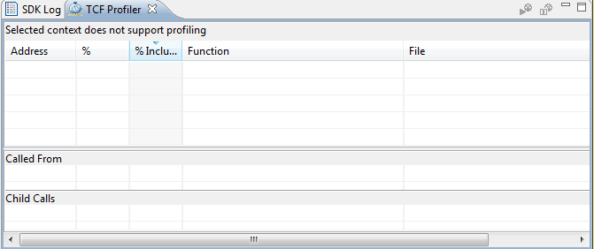
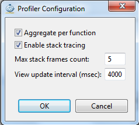
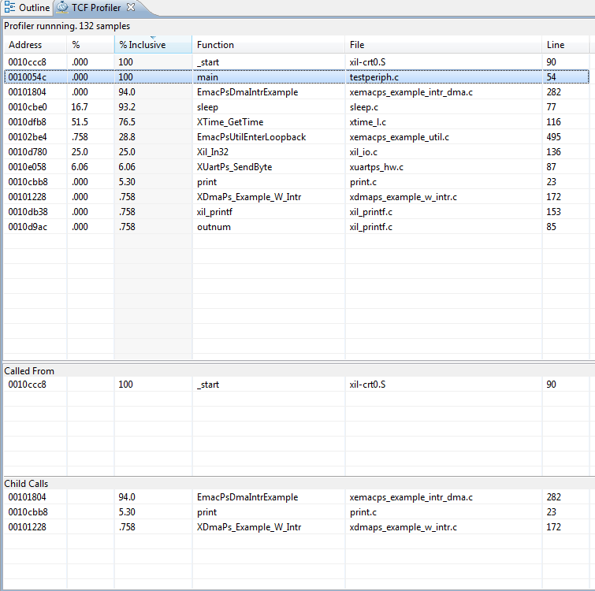

Profiling with TCF Debugger
- Select the application you want to profile.
- Select Run > Debug As > Launch on Hardware (System Debugger).
- When the application stops at main, open the TCF profiler view by
selecting Window > Show View > Other > Debug > TCF Profiler.

- Click the button to start profiling. Alternately,
you can select the Aggregate Per Function option in the Profiler
Configuration dialog box.

- Resume your application. You can now
view the profile data.
